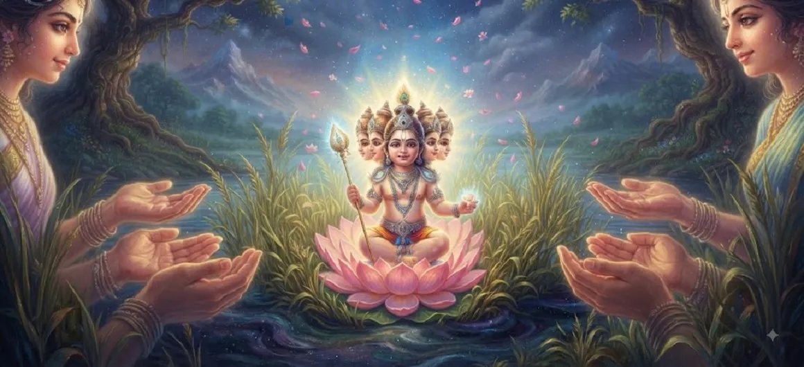

The Six-Faced Lord Appears
Chapter 14 of the Kumara Khanda marks a momentous event in the Shiva Purana: the glorious manifestation of the divine infant as Shanmukha, the six-faced Lord.
In a breathtaking display of divine play (lila), the infant transforms to fulfill the heartfelt desires of his celestial mothers, becoming the eternal guardian of the universe.
Chapter 14 Highlights
Glorious Transformation
The moment the infant reveals his six-faced majesty.
Fulfillment of Love
Blessing each Krittika mother simultaneously.
Shanmukha Essence
Understanding the deeper meaning of the six faces.
Universal Guardian
Observing in all directions with divine awareness.
Shiva's Pride
The joy of the Divine Parents witnessing his glory.
Path to Naming
Setting the stage for the formal naming ceremony.
Core Topics in This Chapter
The Manifestation of Six Radiant Faces
As the celestial Krittika sisters approach the newborn infant resting in the reed grove of Saravana, a remarkable scene unfolds. Eager to cradle and nurse the divine child simultaneously, their maternal hearts overflow with an intense wave of affection. Perceiving their pure intention, the extraordinary infant—who is none other than the supreme energy of Lord Shiva manifest—deploys his divine yogic power. In a dazzling flash of celestial light, he expands his singular form and instantaneously manifests six distinct, glowing, moon-like faces, looking in all six directions of the cosmos.
Fulfilling the Desires of the Krittikas
With this marvelous display, each of the six nursing mothers finds herself blessed beyond measure. Every individual Krittika has a dedicated face looking directly at her with tender warmth, eagerly accepting her milk. The barrier of separation melts away, and a wave of supreme contentment sweeps through the grove as all six mothers experience the unique joy of nursing the divine child concurrently.
Establishing the Shanmukha Identity
Through this awe-inspiring event, the child earns his iconic and eternal appellation—**Shanmukha**, the six-faced Lord. This form is not merely a physical adaptation to satisfy his mothers, but a profound cosmic symbol. It signifies that the supreme commander of the divine forces possesses all-directional awareness, vigilance, and the capability to protect the universe from threats emerging from any quarter simultaneously.
The Blinding Splendor Filling the Cosmos
The effulgence radiating from the six faces is so intensely brilliant that it instantly outshines the radiance of the sun, moon, and stars. The entire reed bed of Saravana transforms into a glowing sanctuary of divine light. Celestial beings watching from their heavenly chariots shield their eyes in awe, marveling at the boundless energy contained within the form of an infant.
Hymns of Praise by the Celestial Assembly
Witnessing this grand manifestation, Lord Brahma, Lord Indra, and the gathered sages bow in deep reverence. They shower celestial flowers from the skies above and break into resounding hymns of praise. They glorify the child as the ultimate destroyer of ignorance, the vanquisher of demons, and the undisputed leader who will restore righteousness to the three worlds.
Restoration of Universal Balance
The sudden appearance of Shanmukha stabilizes the trembling cosmos. The devas, who had long lived in fear of dark forces, feel an overwhelming surge of confidence. They realize that the prophesied savior has not only arrived but has now revealed his true, multidimensional cosmic majesty, fully ready to take command of the divine armies.
Transition to Chapter 15 (The Naming of Skanda)
With his multi-faced form securely established and celebrated by all realms, the narrative moves directly into Chapter 15, where his formal names and titles are officially conferred.
The grand journey of Kumara reaches another pivotal milestone.
Key Teachings of Chapter 14
Divine Versatility
The Divine can assume infinite forms for devotees.
Omnipresent Awareness
Six faces represent divine vigilance in all directions.
Love Responds
God manifests according to the intensity of sincere love.
Total Protection
The protector guards against all forms of threats.
Reverence
Awe is the natural response to divine majesty.
Spiritual Growth
Every phase of life leads toward deeper realization.
Spiritual Reflection
The manifestation of Shanmukha reminds us that our true nature is vast and multifaceted. Just as the child expanded his form to embrace his mothers, we too can expand our consciousness to perceive the divinity in all directions of life, finding strength and protection in every experience.
Living the Message of Chapter 14
Embrace the multi-dimensional nature of challenges; seek guidance from multiple angles.
Remain vigilant and aware, like the six-faced Lord, in your duties and responsibilities.
Celebrate and find joy in the divine milestones of your spiritual journey.
Key Spiritual Concepts
The principle of the six-faced divinity.
The manifestation of the supreme divine form.
The grace received by the Krittikas through his transformation.
Vision looking in all directions (omniscience).
The spirit of leading and protecting as a warrior.
The universal bliss felt at the divine manifestation.
Chapter Summary
Kumara Khanda Chapter 14 describes the glorious appearance of the six-faced Lord Shanmukha in Saravana, a transformation that blesses his mothers, showcases his omnipotence, and fills the universe with divine rejoicing, preparing the path for his formal naming.
Frequently Asked Questions
1. Why did Lord Skanda manifest with six faces?
He manifested six faces to simultaneously receive the affection of his six nursing mothers, the Krittikas, while preserving his unified divine form.
2. What is the significance of the title 'Shanmukha'?
Shanmukha translates to 'The Six-Faced One', representing his multifaceted divinity and his capacity to oversee all directions.
3. How does this chapter relate to the overall Shiva Purana?
It showcases the divine play of the birth of the protector of the Devas, building up the narrative toward his eventual heroic role.
4. What is the next chapter after Chapter 14?
The next chapter is titled 'The Naming of Skanda'.
“With six faces radiating grace, the Lord appeared, capturing the hearts of the heavens and earth alike in his divine majesty.”
Continue Through Kumara Khanda
Chapter 14 highlights the majestic appearance of Shanmukha. Continue to the next chapter, The Naming of Skanda.